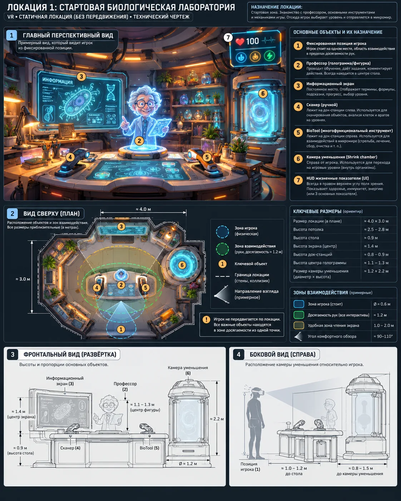

Scene 01 · 0:00–5:00
Лаборатория
Научить игрока базовым VR-взаимодействиям и задать миссию.

Сценарная последовательность
Запуск лаборатории
Захват учебного объекта
Эритроцит
Сканер
Увеличение эритроцита
Гемоглобин → гем → Fe
O₂ и CO₂
BioTool
Исходные показатели
Постановка миссии
Технические требования сцены
- Статичная XR-зона игрока; свободная локомоция отключена.
- Все предметы расположены в зоне досягаемости рук.
- Сканер и BioTool стартуют в док-станциях на столе.
- Информационный экран остаётся тем же UI-пресетом всю игру.